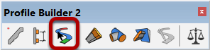
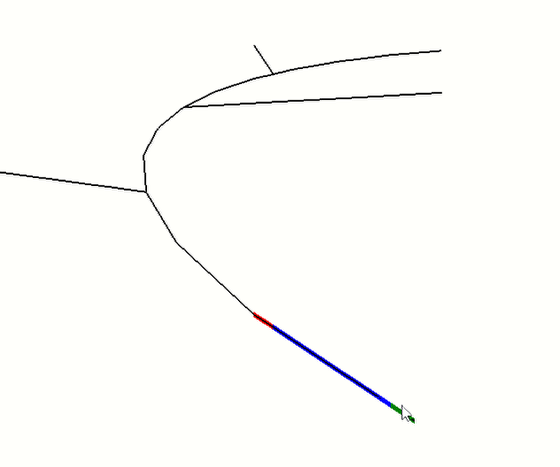
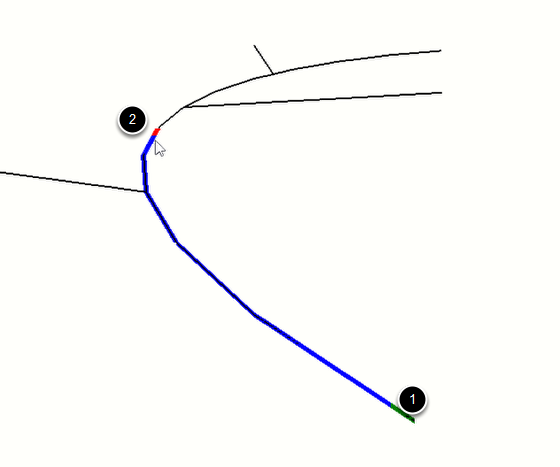
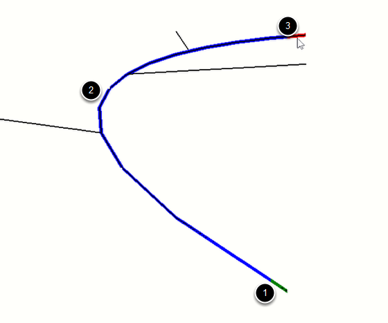
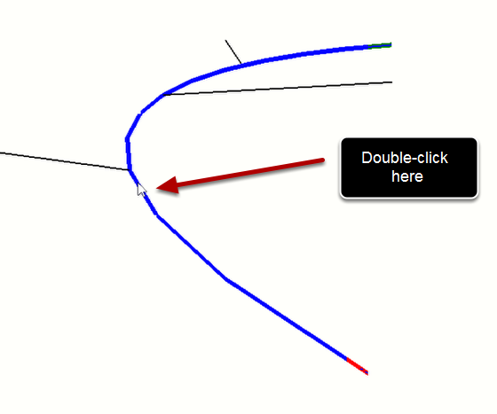

The Smart-Path Select tool makes it easy to select a complex series of connected edges.

Hover the mouse over an edge in your model. The vertex that the mouse is closest to will turn green representing the start position of the path. The end of the path will be colored red.

1. Click the first edge.
2. Click another edge along the path.
When you click on the next edge, all edges along the path between the two edges will also become selected.
TIP: If the first edge you click is a boundary edge, the tool will try to find other boundary edges along the path.


1. Double-clicking on a middle edge will select the edges as shown.
The selected path will generally be the one with the smallest angles between the edges.
ESC = clear selection
ENTER or RETURN = complete selection (optional)